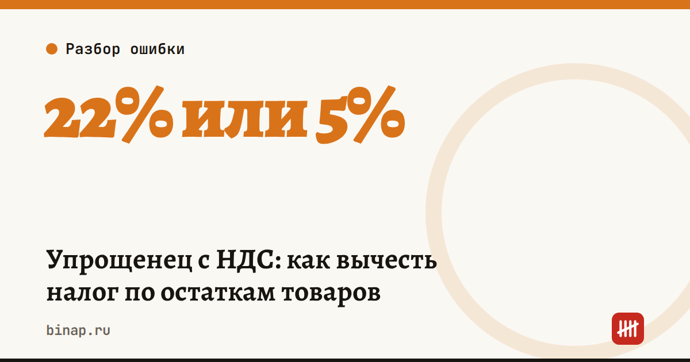

Упрощенец с НДС: как вычесть налог по остаткам товаров

Упрощенец перестаёт быть освобождённым от НДС, как только доход превысил 20 млн ₽. Товар, закупленный ещё «без НДС», потом продаётся уже с налогом. Можно ли вычесть входной НДС по этим остаткам — зависит от выбранной ставки.
Как это устроено: - В 2026 году упрощенец освобождён от НДС, если доход за 2025 год не больше 20 млн ₽ (ст. 145 НК). - Превысили 20 млн ₽ в течение года — платите НДС с 1-го числа следующего месяца. Превышение в августе — налог с 1 сентября. - Ставку выбираете сами: общую 22% (10% для льготных товаров) с вычетами или специальную 5% или 7% без вычетов. - Общая ставка. НДС по товарам, купленным до утраты освобождения, можно принять к вычету, если вы продаёте их уже в облагаемых операциях (абз. 2 п. 8 ст. 145 НК). Вычет — по общим правилам ст. 171 и 172: нужны счёт-фактура и товар на учёте. - Ставка 5% или 7%. Входной НДС не вычитается, а включается в стоимость товара (пп. 8 п. 2 ст. 170 НК). По остаткам тоже.
Пример (расчёт редакции). На складе товар на 1,22 млн ₽ с НДС 220 тыс. ₽, продадите его за 2 млн ₽ без налога. - 22%: налог 440 тыс. ₽ минус вычет 220 тыс. ₽ = 220 тыс. ₽ к уплате. - 5%: 100 тыс. ₽, вычета нет.
На 5% выходит дешевле, но покупателям на ОСНО ваш НДС 5% даёт меньший вычет, а ставку выбирают не на один квартал — проверьте у бухгалтера, на какой срок. Считайте на годовых цифрах, а не на одной партии.
Что сделать сейчас: 1. Если доход за год подходит к 20 млн ₽, посчитайте оба варианта до 1-го числа месяца, с которого начнётся НДС. 2. Проведите инвентаризацию остатков на эту дату. 3. Соберите счета-фактуры и первичку по товарам на складе: без них вычета не будет.
Частые вопросы
Можно ли вычесть НДС при ставке 5% или 7%? Нет, при этих ставках входной налог не вычитается.
С какого момента начисляют НДС? С 1-го числа месяца, следующего за месяцем превышения 20 млн ₽.